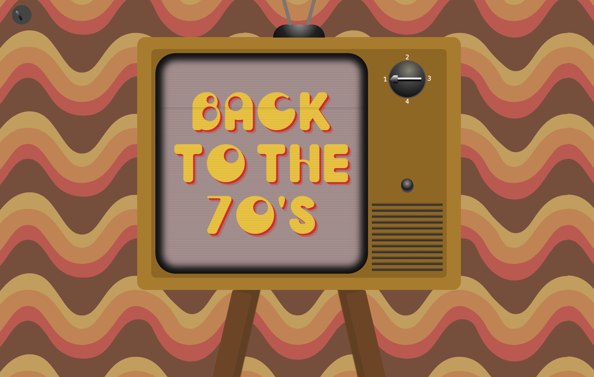

CSS to the
Rescue
Experimenteren met de nieuwste technieken van CSS.

// Uitkomst
Het doel van CSS was met de nieuwste technieken van CSS experimenteren. Hierbij mocht ik (bijna) geen Javascript gebruiken. In mijn geval met uitzondering van een range slider en met Javascript daarvan de waardes uitlezen.
Ik vind geavanceerde CSS best lastig dus was dit vak tot dusver de grootste uitdaging voor mij. Het kostte de meeste tijd ook buiten schooltijd om, maar ik ben blij met mijn eindresultaat.
Het werd aangemoedigd om voor de details te gaan dus dat heb ik ook zeker gedaan, zo heb je op de retro tv per kanaal een andere background en een andere aflevering in dark mode. Voorafgaand aan dit vak was mijn kennis van uitgebreidere CSS technieken best gelimiteerd, maar nu heb ik een beter idee wat mogelijk is en ben ik up to date met de nieuwe technieken zoals style / container queries. Ook heb ik handige code geleerd zoals clamps() voor responsive sizing. Naast deze nieuwere technieken was het voor mij ook fijn om de kennis van het toepassen van een simpel grid handig om op te halen.
Voorafgaand aan dit vak dacht ik vaak dat er vrij snel Javascript nodig is bij een bepaalde functie. Nu kan ik juist eerst kijken of het in css mogelijk is, wat mogelijk ook gelijk voor betere performance kan zorgen.
Bekijk het project >